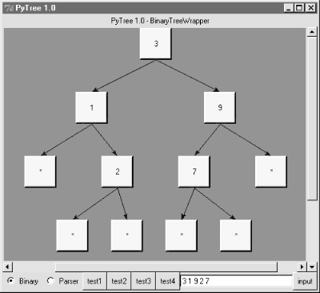
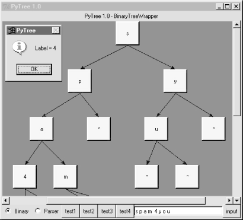
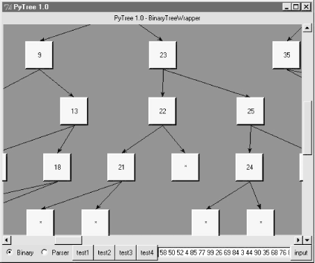
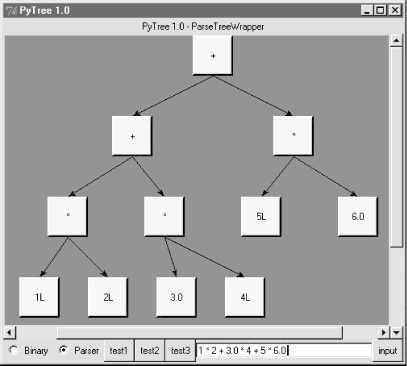
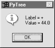

| I l@ve RuBoard |
|
17.10 PyTree: A Generic Tree Object ViewerUp to now, this chapter has been command-line-oriented. To wrap up, I want to show you a program that merges the GUI technology we studied earlier in the book with some of the data structure ideas we've met in this chapter. This program is called PyTree, a generic tree data structure viewer written in Python with the Tkinter GUI library. PyTree sketches out the nodes of a tree on screen as boxes connected by arrows. It also knows how to route mouseclicks on drawn tree nodes back to the tree, to trigger tree-specific actions. Because PyTree lets you visualize the structure of the tree generated by a set of parameters, it's a fun way explore tree-based algorithms. PyTree supports arbitrary tree types by "wrapping" real trees in interface objects. The interface objects implement a standard protocol by communicating with the underlying tree object. For the purposes of this chapter, PyTree is instrumented to display binary search trees ; for the next chapter, it's also set up to render expression parse trees. New trees can be viewed by coding wrapper classes to interface to new tree types. The GUI interfaces PyTree utilizes were covered in depth earlier in this book, so I won't go over this code in much detail here. See Part II, for background details, and be sure to run this program on your own computer to get a better feel for its operation. Because it is written with Python and Tkinter, it should be portable to Windows, Unix, and Macs. 17.10.1 Running PyTreeBefore we get to the code, let's see what PyTree looks like. You can launch PyTree from the PyDemos launcher bar (see the top-level of the examples distribution source tree at http://examples.oreilly.com/python2), or by directly running the treeview.py file listed in Example 17-27. Figure 17-2 shows PyTree in action displaying the binary tree created by the "test1" button. Trees are sketched as labels embedded in a canvas, and connected by lines with arrows. The lines reflect parent-to-child relationships in the actual tree; PyTree attempts to layout the tree to produce a more or less uniform display like this one. Figure 17-2. PyTree viewing a binary search tree (test1)PyTree's window consists of a canvas with vertical and horizontal scrolls, and a set of controls at the bottom -- radiobuttons for picking the type of tree you wish to display, a set of buttons that trigger canned tree drawing tests, and an input field for typing text to specify and generate a new tree. The set of test buttons changes if you pick the Parser radiobutton (you get one less test button); PyTree use widget pack_forget and pack methods to hide and show tree-specific buttons on the fly. When you pick one of the canned test buttons, it displays in the input field the string you would type to generate the tree drawn. For binary trees, type a list of values separated by spaces and press the "input" button or the Enter key to generate a new tree; the new tree is the result of inserting the typed values from left to right. For parse trees, you input an expression string in the input field instead (more on this later). Figure 17-3 shows the result of typing a set of values into the input field and submitting; the resulting binary tree shows up in the canvas. Figure 17-3. A binary tree typed manually with on-click pop-upNotice the pop-up in this screen shot; left-clicking on a displayed tree node with your mouse runs whatever action a tree wrapper class defines, and displays its result in the pop-up. Binary trees have no action to run, so we get a default message in the pop-up, but parse tress use the mouseclick to evaluate the subtree rooted at the clicked node (again, more on parse trees later). Just for fun, maximize this window and press the "test4" button -- it inserts 100 numbers from through 99 into a new binary tree at random, and displays the result. Figure 17-4 captures one portion of this tree; it's much too large to fit on one screen (or on one book page), but you can move around the tree with the canvas scrollbars. Figure 17-4. PyTree viewing a large binary search tree (test4)PyTree uses an algorithm to connect all parents to their children in this tree without crossing their connecting lines. It does some up-front analysis to try and arrange descendents at each level to be as close to their parents as possible. This analysis step also yields the overall size of a new tree -- PyTree uses it to reset the scrollable area size of the canvas for each tree drawn. 17.10.2 Pytree Source CodeLet's move on to the code. Similar to PyForm in the prior chapter, PyTree is coded as two modules; here, one module handles the task of sketching trees in the GUI, and another implements wrappers to interface to various tree types and extends the GUI with extra widgets. 17.10.2.1 Tree-independent GUI implementationThe module in Example 17-26 does the work of drawing trees in a canvas. It's coded to be independent of any particular tree structure -- its TreeViewer class delegates to its TreeWrapper class when it needs tree-specific information for the drawing (e.g., node label text, node child links). TreeWrapper in turn expects to be subclassed for a specific kind of tree; in fact it raises assertion errors if you try to use it without subclassing. In design terms, TreeViewer embeds a TreeWrapper; it's almost as easy to code TreeViewer subclasses per tree type, but that limits a viewer GUI to one particular kind of tree (see treeview_subclasses.py at http://examples.oreilly.com/python2 for a subclassing-based alternative). Trees are drawn in two steps -- a planning traversal the builds a layout data structure that links parents and children, and a drawing step that uses the generated plan to draw and link node labels on the canvas. The two-step approach simplifies some of the logic required to layout trees uniformly. Study this listing for more details. Example 17-26. PP2E\Dstruct\TreeView\treeview_wrappers.py#########################################################################
# PyTree: sketch arbitrary tree data structures in a scrolled canvas;
# this version uses tree wrapper classes embedded in the viewer gui
# to support arbitrary trees (i.e.. composition, not viewer subclassing);
# also adds tree node label click callbacks--run tree specific actions;
# see treeview_subclasses.py for subclass-based alternative structure;
# subclassing limits one tree viewer to one tree type, wrappers do not;
# see treeview_left.py for an alternative way to draw the tree object;
# see and run treeview.py for binary and parse tree wrapper test cases;
#########################################################################
from Tkinter import *
from tkMessageBox import showinfo
Width, Height = 350, 350 # start canvas size (reset per tree)
Rowsz = 100 # pixels per tree row
Colsz = 100 # pixels per tree col
###################################
# interface to tree object's nodes
###################################
class TreeWrapper: # subclass for a tree type
def children(self, treenode):
assert 0, 'children method must be specialized for tree type'
def label(self, treenode):
assert 0, 'label method must be specialized for tree type'
def value(self, treenode):
return ''
def onClick(self, treenode): # node label click callback
return ''
def onInputLine(self, line, viewer): # input line sent callback
pass
###########$######################
# tree view gui, tree independent
##################################
class TreeViewer(Frame):
def __init__(self, wrapper, parent=None, tree=None, bg='brown', fg='beige'):
Frame.__init__(self, parent)
self.pack(expand=YES, fill=BOTH)
self.makeWidgets(bg) # build gui: scrolled canvas
self.master.title('PyTree 1.0') # assume I'm run standalone
self.wrapper = wrapper # embed a TreeWrapper object
self.fg = fg # setTreeType changes wrapper
if tree:
self.drawTree(tree)
def makeWidgets(self, bg):
self.title = Label(self, text='PyTree 1.0')
self.canvas = Canvas(self, bg=bg, borderwidth=0)
vbar = Scrollbar(self)
hbar = Scrollbar(self, orient='horizontal')
self.title.pack(side=TOP, fill=X)
vbar.pack(side=RIGHT, fill=Y) # pack canvas after bars
hbar.pack(side=BOTTOM, fill=X)
self.canvas.pack(side=TOP, fill=BOTH, expand=YES)
vbar.config(command=self.canvas.yview) # call on scroll move
hbar.config(command=self.canvas.xview)
self.canvas.config(yscrollcommand=vbar.set) # call on canvas move
self.canvas.config(xscrollcommand=hbar.set)
self.canvas.config(height=Height, width=Width) # viewable area size
def clearTree(self):
mylabel = 'PyTree 1.0 - ' + self.wrapper.__class__.__name__
self.title.config(text=mylabel)
self.unbind_all('<Button-1>')
self.canvas.delete('all') # clear events, drawing
def drawTree(self, tree):
self.clearTree( )
wrapper = self.wrapper
levels, maxrow = self.planLevels(tree, wrapper)
self.canvas.config(scrollregion=( # scrollable area
0, 0, (Colsz * maxrow), (Rowsz * len(levels)) )) # upleft, lowright
self.drawLevels(levels, maxrow, wrapper)
def planLevels(self, root, wrap):
levels = []
maxrow = 0 # traverse tree to
currlevel = [(root, None)] # layout rows, cols
while currlevel:
levels.append(currlevel)
size = len(currlevel)
if size > maxrow: maxrow = size
nextlevel = []
for (node, parent) in currlevel:
if node != None:
children = wrap.children(node) # list of nodes
if not children:
nextlevel.append((None, None)) # leave a hole
else:
for child in children:
nextlevel.append((child, node)) # parent link
currlevel = nextlevel
return levels, maxrow
def drawLevels(self, levels, maxrow, wrap):
rowpos = 0 # draw tree per plan
for level in levels: # set click handlers
colinc = (maxrow * Colsz) / (len(level) + 1) # levels is treenodes
colpos = 0
for (node, parent) in level:
colpos = colpos + colinc
if node != None:
text = wrap.label(node)
more = wrap.value(node)
if more: text = text + '=' + more
win = Label(self.canvas, text=text,
bg=self.fg, bd=3, relief=RAISED)
win.pack( )
win.bind('<Button-1>',
lambda e, n=node, handler=self.onClick: handler(e, n))
self.canvas.create_window(colpos, rowpos, anchor=NW,
window=win, width=Colsz*.5, height=Rowsz*.5)
if parent != None:
self.canvas.create_line(
parent.__colpos + Colsz*.25, # from x-y, to x-y
parent.__rowpos + Rowsz*.5,
colpos + Colsz*.25, rowpos, arrow='last', width=1)
node.__rowpos = rowpos
node.__colpos = colpos # mark node, private attrs
rowpos = rowpos + Rowsz
def onClick(self, event, node):
label = event.widget
wrap = self.wrapper
text = 'Label = ' + wrap.label(node) # on label click
value = wrap.value(node)
if value:
text = text + '\nValue = ' + value # add tree text if any
result = wrap.onClick(node) # run tree action if any
if result:
text = text + '\n' + result # add action result
showinfo('PyTree', text) # popup std dialog
def onInputLine(self, line): # feed text to tree wrapper
self.wrapper.onInputLine(line, self) # ex: parse and redraw tree
def setTreeType(self, newTreeWrapper): # change tree type drawn
if self.wrapper != newTreeWrapper: # effective on next draw
self.wrapper = newTreeWrapper
self.clearTree( ) # else old node, new wrapper
17.10.2.2 Tree wrappers and test widgetsThe other half of PyTree consists of a module that defines TreeWrapper subclasses that interface to binary and parser trees, implements canned test case buttons, and adds the control widgets to the bottom of the PyTree window.[4] These control widgets were split off into this separate module (in Example 17-27) on purpose, because the PyTree canvas might be useful as a viewer component in other GUI applications.
Example 17-27. PP2E\Dstruct\TreeView\treeview.py# PyTree launcher script
# wrappers for viewing tree types in the book, plus test cases/gui
import string
from Tkinter import *
from treeview_wrappers import TreeWrapper, TreeViewer
from PP2E.Dstruct.Classics import btree
from PP2E.Lang.Parser import parser2
###################################################################
# binary tree wrapper
###################################################################
class BinaryTreeWrapper(TreeWrapper): # embed binary tree in viewer
def children(self, node): # adds viewer protocols
try: # to interface with tree
return [node.left, node.right]
except:
return None
def label(self, node):
try:
return str(node.data)
except:
return str(node)
def onInputLine(self, line, viewer): # on test entry at bottom
items = string.split(line) # make tree from text input
t = btree.BinaryTree( ) # draw resulting btree
for x in items: t.insert(x) # no onClick handler here
viewer.drawTree(t.tree)
###################################################################
# binary tree extension
###################################################################
class BinaryTree(btree.BinaryTree):
def __init__(self, viewer): # embed viewer in tree
btree.BinaryTree.__init__(self) # but viewer has a wrapper
self.viewer = viewer
def view(self):
self.viewer.drawTree(self.tree)
###################################################################
# parse tree wrapper
###################################################################
class ParseTreeWrapper(TreeWrapper):
def __init__(self): # embed parse tree in viewer
self.dict = {} # adds viewer protocols
def children(self, node):
try:
return [node.left, node.right]
except:
try:
return [node.var, node.val]
except:
return None
def label(self, node):
for attr in ['label', 'num', 'name']:
if hasattr(node, attr):
return str(getattr(node, attr))
return 'set'
def onClick(self, node): # on tree label click
try: # tree-specific action
result = node.apply(self.dict) # evaluate subtree
return 'Value = ' + str(result) # show result in popup
except:
return 'Value = <error>'
def onInputLine(self, line, viewer): # on input line
p = parser2.Parser( ) # parse expr text
p.lex.newtext(line) # draw resulting tree
t = p.analyse( )
if t: viewer.drawTree(t)
###################################################################
# canned test cases (or type new nodelists/exprs in input field)
###################################################################
def shownodes(sequence):
sequence = map(str, sequence) # convert nodes to strings
entry.delete(0, END) # show nodes in text field
entry.insert(0, string.join(sequence, ' '))
def test1_binary( ): # tree type is binary wrapper
nodes = [3, 1, 9, 2, 7] # make a binary tree
tree = BinaryTree(viewer) # embed viewer in tree
for i in nodes: tree.insert(i)
shownodes(nodes) # show nodes in input field
tree.view( ) # sketch tree via embedded viewer
def test2_binary( ):
nodes = 'badce'
tree = btree.BinaryTree( ) # embed wrapper in viewer
for c in nodes: tree.insert(c) # make a binary tree
shownodes(nodes)
viewer.drawTree(tree.tree) # ask viewer to draw it
def test3_binary( ):
nodes = 'abcde'
tree = BinaryTree(viewer)
for c in nodes: tree.insert(c)
shownodes(nodes)
tree.view( )
def test4_binary( ):
tree = BinaryTree(viewer)
import random # make a big binary tree
nodes = range(100) # insert 100 nodes at random
order = [] # and sketch in viewer
while nodes:
item = random.choice(nodes)
nodes.remove(item)
tree.insert(item)
order.append(item)
shownodes(order)
tree.view( )
def test_parser(expr):
parser = parser2.Parser( ) # tree type is parser wrapper
parser.lex.newtext(expr) # subtrees evaluate when clicked
tree = parser.analyse( ) # input line parses new expr
entry.delete(0, END) # vars set in wrapper dictionary
entry.insert(0, expr) # see lang/text chapter for parser
if tree: viewer.drawTree(tree)
def test1_parser( ): test_parser("1 + 3 * (2 * 3 + 4)")
def test2_parser( ): test_parser("set temp 1 + 3 * 2 * 3 + 4")
def test3_parser( ): test_parser("set result temp + ((1 + 3) * 2) * (3 + 4)")
###################################################################
# build viewer with extra widgets to test tree types
###################################################################
if __name__ == '__main__':
root = Tk( ) # build a single viewer gui
bwrapper = BinaryTreeWrapper( ) # add extras: input line, test btns
pwrapper = ParseTreeWrapper( ) # make wrapper objects
viewer = TreeViewer(bwrapper, root) # start out in binary mode
def onRadio( ):
if var.get( ) == 'btree':
viewer.setTreeType(bwrapper) # change viewer's wrapper
for btn in p_btns: btn.pack_forget( ) # erase parser test buttons
for btn in b_btns: btn.pack(side=LEFT) # unhide binary buttons
elif var.get( ) == 'ptree':
viewer.setTreeType(pwrapper)
for btn in b_btns: btn.pack_forget( )
for btn in p_btns: btn.pack(side=LEFT)
var = StringVar( )
var.set('btree')
Radiobutton(root, text='Binary', command=onRadio,
variable=var, value='btree').pack(side=LEFT)
Radiobutton(root, text='Parser', command=onRadio,
variable=var, value='ptree').pack(side=LEFT)
b_btns = []
b_btns.append(Button(root, text='test1', command=test1_binary))
b_btns.append(Button(root, text='test2', command=test2_binary))
b_btns.append(Button(root, text='test3', command=test3_binary))
b_btns.append(Button(root, text='test4', command=test4_binary))
p_btns = []
p_btns.append(Button(root, text='test1', command=test1_parser))
p_btns.append(Button(root, text='test2', command=test2_parser))
p_btns.append(Button(root, text='test3', command=test3_parser))
onRadio( )
def onInputLine( ):
line = entry.get( ) # use per current tree wrapper type
viewer.onInputLine(line) # type a node list or expression
Button(root, text='input', command=onInputLine).pack(side=RIGHT)
entry = Entry(root)
entry.pack(side=RIGHT, expand=YES, fill=X)
entry.bind('<Return>', lambda event: onInputLine( )) # button or enter key
root.mainloop( ) # start up the gui
17.10.3 Pytree Does Parse Trees, TooFinally, I want to show you what happens when you click the Parser radiobutton in the PyTree window. The GUI changes over to an expression parse tree viewer, by simply using a different tree wrapper class: the label at the top changes, the test buttons change, and input is now entered as an arithmetic expression to be parsed and sketched. Figure 17-5 shows a tree generated for the expression string displayed in the input field. Figure 17-5. PyTree viewing an expression parse treePyTree is designed to be generic -- it displays both binary and parse trees, but is easy to extend for new tree types with new wrapper classes. On the GUI, you can switch between binary and parser tree types at any time by clicking the radiobuttons. Input typed into the input field is always evaluated according to the current tree type. When the viewer is in parse tree mode, clicking on a node in the tree evaluates the part of the expression represented by the parse tree rooted at the node you clicked. Figure 17-6 shows the pop-up you get when you click the root node of the tree displayed. Figure 17-6. PyTree pop-up after clicking a parse tree nodeWhen viewing parse trees, PyTree becomes a sort of visual calculator -- you can generate arbitrary expression trees and evaluate any part of them by clicking on nodes displayed. But at this point, there is not much more I can tell you about these kinds of trees until you move on to Chapter 18. |
| I l@ve RuBoard |
|